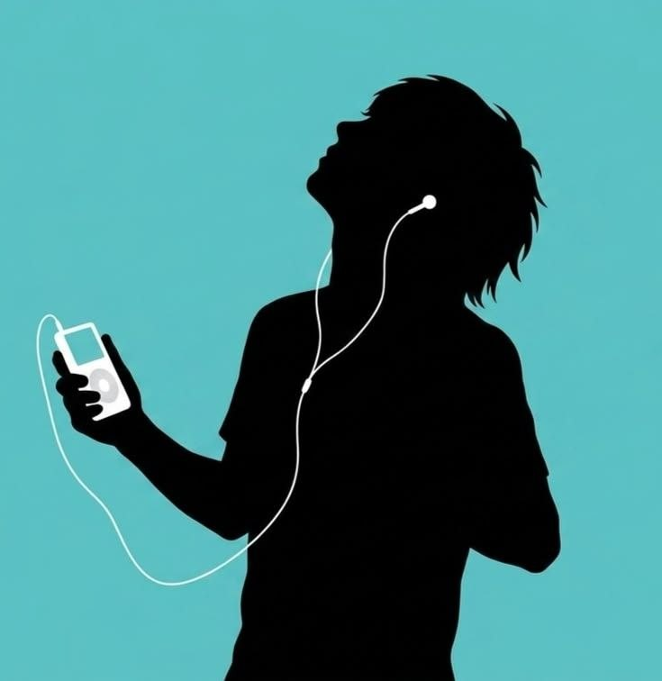

Музыка сопровождает человека каждый день — дома, в школе, в наушниках по дороге и даже в воспоминаниях. Она способна менять настроение, успокаивать, вдохновлять и помогать переживать разные эмоции.
Музыка влияет на эмоции, мысли и даже на поведение человека. Спокойные мелодии помогают расслабиться и почувствовать себя в безопасности, а энергичные треки могут поднимать настроение и давать мотивацию. Иногда одна песня способна напомнить о важном моменте жизни или вернуть воспоминания. Музыка помогает людям выражать себя, справляться со стрессом и чувствовать поддержку, даже когда рядом никого нет. у каждого человека есть свои любимые жанры, потому что музыка часто отражает характер, настроение и внутренний мир.
Подростки чаще всего слушают музыку, которая помогает им выражать эмоции и чувствовать себя понятыми. Сейчас популярны поп, рэп, фонк, инди и электронная музыка. Многие слушают треки через наушники почти каждый день, потому что музыка становится частью их настроения и стиля жизни.

Взрослые чаще выбирают спокойную или знакомую музыку. Многим нравятся песни, которые напоминают о молодости и важных моментах жизни. Популярны рок, классика, джаз и музыка 80-х или 90-х годов.
Ыыыы